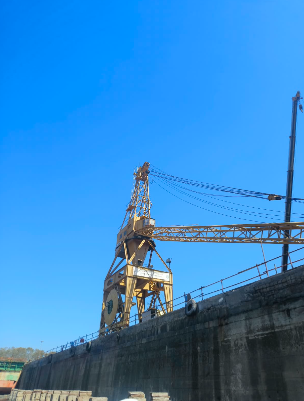

PROYEK PENGEMBANGAN GALANGAN KAPAL — 2026
MERANCANG MASA DEPAN INDUSTRI PERKAPALAN.
Perencanaan Galangan Kapal Terintegrasi, Rekayasa, dan Pengembangan Teknologi.
JELAJAHI PROYEK KAMI ↗
PROYEK PENGEMBANGAN GALANGAN KAPAL — 2026
Perencanaan Galangan Kapal Terintegrasi, Rekayasa, dan Pengembangan Teknologi.
JELAJAHI PROYEK KAMI ↗01 - PENDAHULUAN
Kajian pengembangan fasilitas PT. Dumas Tanjung Perak Shipyards melalui evaluasi kondisi eksisting, perencanaan tata letak, dan modernisasi teknologi produksi.
LATAR BELAKANG PENGEMBANGAN
PT. Dumas Tanjung Perak Shipyards memiliki dua lokasi operasional utama, yaitu Nilam Barat 12 dan Nilam Barat 24–26. Masing-masing lokasi memiliki karakteristik fasilitas dan aktivitas produksi yang berbeda dalam mendukung pembangunan kapal baru maupun pekerjaan reparasi.
Perbedaan kondisi fasilitas dan aktivitas operasional tersebut menjadi dasar untuk mengevaluasi kebutuhan pengembangan. Kajian ini mencakup penyusunan rancangan tata letak terintegrasi, peningkatan fasilitas produksi, serta penerapan teknologi untuk mendukung efektivitas kegiatan operasional galangan.
ARAH PENGEMBANGAN
Mengidentifikasi kondisi bangunan, mesin produksi, peralatan pendukung, serta kendala operasional pada kedua lokasi galangan sebagai dasar penentuan kebutuhan pengembangan.
Menyusun rancangan tata letak dengan mempertimbangkan fungsi fasilitas, urutan proses produksi, perpindahan material, dan keterkaitan aktivitas pada kedua lokasi galangan.
Merumuskan alternatif peningkatan mesin produksi, fasilitas pendukung, sistem pemeliharaan, dan teknologi untuk meningkatkan keandalan serta efektivitas operasional galangan.
Mewujudkan rancangan pengembangan galangan kapal yang terintegrasi melalui peningkatan fasilitas, optimalisasi proses produksi, dan penerapan teknologi yang tepat guna.
02 - PROFIL GALANGAN
PT. Dumas Tanjung Perak Shipyards merupakan perusahaan galangan kapal yang bergerak dalam pembangunan kapal baru serta pekerjaan perbaikan dan reparasi kapal. Perusahaan ini menjadi objek kajian untuk mengevaluasi kondisi fasilitas, aktivitas produksi, dan kebutuhan pengembangan galangan.
Tahun Berdiri
Lokasi Operasional
Kapal Terbangun
Pekerjaan Reparasi
LOKASI OPERASIONAL
Surabaya, Jawa Timur
Area ini dimanfaatkan untuk pembangunan kapal, kegiatan sandblasting, pemotongan material menggunakan NC Cutting, serta penyimpanan material produksi.
Surabaya, Jawa Timur
Area ini mendukung kegiatan fabrikasi, perakitan blok kapal, pembangunan kapal baru, serta pekerjaan perbaikan dan reparasi kapal.
Evaluasi kondisi internal dan eksternal berdasarkan fasilitas serta kegiatan operasional PT Dumas Tanjung Perak Shipyards.
04 - ANALISIS FASILITAS DAN PRODUKTIVITAS
Evaluasi fasilitas eksisting dan identifikasi peluang peningkatan teknologi melalui perencanaan pengembangan galangan kapal.
 01 / PRODUCTION EQUIPMENT
01 / PRODUCTION EQUIPMENT
Terdapat tiga unit mesin bending yang digunakan untuk proses pembentukan pelat. Beberapa mesin masih menggunakan model atau teknologi relatif lama. Spesifikasi teknis mesin belum terdata sehingga perlu dilakukan evaluasi lebih lanjut.
Pengadaan CNC Hydraulic Press Brake untuk meningkatkan ketelitian dan efisiensi proses pembentukan material.
 02 / BLOCK ASSEMBLY
02 / BLOCK ASSEMBLY
Penggunaan sistem live jig yang berpotensi mengalami perubahan bentuk atau deformasi saat proses leveling blok.
Penerapan embedded jig dengan sistem penanaman atau penjangkaran pada fondasi untuk meningkatkan kestabilan.
 03 / MATERIAL PROCESSING
03 / MATERIAL PROCESSING
Tersedia dua unit NC Cutting dan satu unit NC Plasma. Working area masing-masing mesin adalah 3.000 × 12.000 mm. Kondisi sistem kontrol dan keandalan operasional NC Cutting tetap menjadi aspek yang perlu dievaluasi.
Upgrade sistem kontrol NC Cutting untuk meningkatkan ketepatan proses pemotongan dan mendukung efisiensi produksi.

04 / MATERIAL HANDLINGTerdapat lima unit crane yang tersebar pada dua lokasi galangan, terdiri atas satu Gantry Crane berkapasitas 50–200 ton, dua Mobile Crane berkapasitas 25–75 ton, dan dua Hoist Crane berkapasitas 5–20 ton. Antrean penggunaan dan gangguan operasional pada salah satu unit masih menjadi aspek yang perlu dievaluasi.
Penerapan preventive dan condition-based maintenance pada lima unit crane eksisting. Penambahan crane hanya dipertimbangkan apabila hasil evaluasi kapasitas dan kebutuhan operasional menunjukkan bahwa fasilitas yang tersedia belum mencukupi.
Alur Produksi
Gambaran tahapan proses pembangunan kapal di PT Dumas Tanjung Perak Shipyards, mulai dari persiapan material hingga proses penyatuan blok kapal (erection), serta keterkaitan setiap tahapan dengan fasilitas produksi yang digunakan.
PROSES PRODUKSI DAN ALUR FASILITAS
Setiap tahapan produksi memiliki keterkaitan dengan fasilitas dan proses sebelumnya. Gangguan peralatan, seperti kerusakan crane, maupun keterlambatan pemindahan material dapat menimbulkan waktu tunggu dan memengaruhi kelancaran pekerjaan pada tahapan berikutnya.
Evaluasi difokuskan pada urutan pekerjaan, perpindahan material, waktu tunggu, pemanfaatan area kerja, kondisi fasilitas, serta koordinasi antarproses produksi. Data waktu pengerjaan setiap tahapan masih diperlukan untuk melakukan pengukuran produktivitas secara kuantitatif.
05 - PERENCANAAN LAYOUT GALANGAN
Evaluasi tata letak fasilitas eksisting pada dua lokasi galangan sebagai dasar penyusunan rancangan pengembangan yang terintegrasi.
Gambaran kondisi tata letak fasilitas pada Nilam Barat 12 dan Nilam Barat 24–26 berdasarkan hasil observasi.

Tata letak fasilitas galangan pada lokasi Nilam Barat 12 dengan area pembangunan kapal dan penyimpanan material.

Tata letak fasilitas galangan dengan area graving dock, workshop, fabrikasi, dan kegiatan perakitan blok.
Rancangan pengembangan tata letak dengan mempertimbangkan pembagian fungsi fasilitas, alur produksi, serta koordinasi kegiatan pada kedua lokasi galangan.

Representasi tiga dimensi dari rancangan pengembangan fasilitas galangan kapal untuk menggambarkan tata letak dan hubungan antararea produksi.

06 - IDENTIFIKASI MASALAH
Identifikasi permasalahan berdasarkan hasil pengamatan terhadap kondisi fasilitas dan kegiatan produksi PT Dumas Tanjung Perak Shipyards, meliputi peralatan produksi, sistem jig, serta fasilitas pengangkatan material.
2 NC Cutting + 1 NC Plasma
Working area masing-masing 3.000 × 12.000 mm
Mesin Bending
Spesifikasi teknis belum terdata
1 Gantry Crane, 2 Mobile Crane, 2 Hoist Crane
Jig (jumlah berdasarkan perkiraan pengamatan)
CUTTING & FORMING SYSTEM
Beberapa mesin NC Cutting masih menggunakan model lama. Selain itu, terdapat mesin bending dengan model atau teknologi yang relatif lama.
DAMPAK TERHADAP PRODUKSIKondisi teknologi peralatan perlu diperhatikan karena dapat memengaruhi efektivitas proses pemotongan dan pembentukan pelat sesuai kebutuhan konstruksi kapal.
BLOCK ASSEMBLY & LEVELING
Sistem yang digunakan masih berupa live jig. Berdasarkan pengamatan, beberapa jig mengalami perubahan bentuk atau bengkok sehingga memerlukan pemeriksaan dan penyesuaian.
DAMPAK TERHADAP PRODUKSIPerubahan bentuk dapat memengaruhi kestabilan landasan dan ketepatan posisi serta ketinggian blok selama proses leveling.
CRANE & LIFTING SYSTEM
Terdapat lima unit crane pada dua lokasi galangan: satu unit di Nilam Barat 12 dan empat unit di Nilam Barat 24–26. Jenisnya terdiri atas satu Gantry Crane berkapasitas 50–200 ton, dua Mobile Crane berkapasitas 25–75 ton, dan dua Hoist Crane berkapasitas 5–20 ton. Hoist Crane membantu aktivitas di area sandblasting dan NC Cutting.
DAMPAK TERHADAP PRODUKSIKerusakan crane dapat menyebabkan penghentian sementara aktivitas pengangkatan hingga suku cadang tersedia dan perbaikan selesai. Kondisi tersebut berpotensi menimbulkan waktu tunggu pada pekerjaan yang membutuhkan fasilitas pengangkatan.
Evaluasi kuantitatif produktivitas belum dapat dilakukan secara menyeluruh karena beberapa parameter produksi belum tersedia dalam data observasi.
Jumlah blok yang diproduksi per kapal
Rata-rata durasi pengerjaan setiap blok
Jumlah kapal yang diselesaikan per tahun
Oleh karena itu, pengembangan fasilitas pada tahap ini didasarkan pada identifikasi kondisi teknis dan kebutuhan operasional hasil observasi, bukan pada klaim peningkatan produktivitas yang belum terukur.
07 - ALTERNATIF TEKNOLOGI
Rancangan peningkatan fasilitas dan penerapan teknologi berdasarkan hasil evaluasi teknis untuk mendukung keandalan peralatan, kestabilan proses produksi, serta efisiensi operasional galangan kapal.
PRODUCTION EQUIPMENT
Pengadaan mesin CNC Hydraulic Press Brake untuk meningkatkan kemampuan dan ketelitian proses pembentukan pelat pada kegiatan fabrikasi komponen kapal.
BLOCK ASSEMBLY
Pengembangan sistem jig dengan metode penanaman atau penjangkaran pada fondasi sebagai alternatif live jig untuk mendukung kestabilan struktur penyangga, ketepatan posisi, dan ketinggian blok selama proses leveling serta perakitan blok kapal. Penerapannya memerlukan evaluasi desain fondasi dan beban struktur.
MATERIAL PROCESSING
Peningkatan sistem kontrol pada mesin NC Cutting untuk mendukung ketepatan proses pemotongan, kestabilan operasi, dan kesesuaian hasil pemotongan terhadap kebutuhan fabrikasi.
MATERIAL HANDLING
Penerapan preventive dan condition-based maintenance pada lima unit crane eksisting untuk mengurangi risiko kerusakan dan downtime. Penambahan fasilitas pengangkatan dipertimbangkan apabila hasil evaluasi kapasitas, frekuensi penggunaan, dan antrean operasional menunjukkan kebutuhan tambahan.
OPERATIONAL SYSTEM
Optimalisasi alur perpindahan material, penempatan fasilitas, dan hubungan antararea kerja melalui rancangan tata letak terintegrasi. Perencanaan mempertimbangkan kebutuhan operasional masing-masing lokasi galangan tanpa mengasumsikan penggabungan fisik kedua lokasi.
*Spesifikasi overhead traveling crane sebesar 10 ton dengan bentang 12–15 meter merupakan estimasi awal pengembangan dan masih memerlukan evaluasi teknis terhadap struktur bangunan, kapasitas lintasan, beban kerja, serta kebutuhan operasional galangan.
Seluruh program pengembangan merupakan rancangan konseptual yang perlu disesuaikan melalui perencanaan teknis dan evaluasi implementasi.
08 - ANALISIS INVESTASI & TECHNOLOGY ROADMAP
Estimasi kebutuhan investasi dan perencanaan tahapan implementasi teknologi secara bertahap untuk mendukung pengembangan fasilitas serta peningkatan keandalan operasional galangan.
Estimasi kebutuhan investasi pengembangan fasilitas
Estimasi pemeliharaan lima unit crane per tahun
Estimasi CAPEX ditambah OPEX tahun pertama
CNC Hydraulic Press Brake
Rp456.550.000Upgrade Sistem NC Cutting
Rp132.250.000Embedded Jig System
Rp149.500.000Penambahan Crane 10 Ton (Opsional)
Rp638.250.000Peningkatan Infrastruktur Area Kerja
Rp350.000.000Pengembangan Sistem Pengelasan
Rp300.000.000Pengembangan Peralatan Material Handling
Rp250.000.000Peningkatan Sistem Keselamatan Fasilitas
Rp150.000.000Engineering, Instalasi, dan Commissioning
Rp100.000.000TOTAL ESTIMASI CAPEX
Rp2.526.550.000Biaya pemeliharaan lima unit crane diperkirakan sebesar Rp250.000.000 per tahun. Anggaran mencakup preventive maintenance, penggantian suku cadang, perbaikan mekanis dan kelistrikan, serta inspeksi dan pengujian teknis. Biaya ini dihitung terpisah dari kebutuhan CAPEX.
Seluruh nilai merupakan estimasi awal untuk perencanaan pengembangan fasilitas, bukan penawaran harga dari pemasok. Nilai investasi masih memerlukan verifikasi spesifikasi teknis, volume pekerjaan, survei lapangan, dan penawaran vendor. Penambahan crane bersifat opsional dan bergantung pada hasil evaluasi kebutuhan kapasitas serta kondisi struktur pendukung.
Peningkatan keandalan dan modernisasi mesin produksi.
Pengembangan sistem jig dan fasilitas pengelasan.
Peningkatan sistem pemeliharaan dan material handling.
Optimalisasi tata letak, infrastruktur, dan keselamatan kerja.
Evaluasi dan Persiapan Pengembangan
Implementasi Pengembangan Fasilitas
Evaluasi dan Optimalisasi Operasional
Analisis kelayakan investasi menggunakan Payback Period (PP), Net Present Value (NPV), dan Benefit Cost Ratio (BCR) belum dapat ditentukan secara kuantitatif karena data penghematan biaya, manfaat finansial, serta arus kas hasil pengembangan belum tersedia.
Oleh karena itu, estimasi biaya pada tahap ini digunakan sebagai dasar perencanaan awal dan masih memerlukan evaluasi lebih lanjut sebelum implementasi investasi.
*Tahapan dan rentang waktu merupakan konsep awal pengembangan yang dapat disesuaikan dengan hasil perencanaan teknis, ketersediaan anggaran, dan evaluasi kebutuhan operasional.
09 - KESIMPULAN DAN REKOMENDASI
Pengembangan fasilitas galangan diarahkan pada peningkatan keandalan peralatan, optimalisasi alur produksi, serta penerapan teknologi yang sesuai dengan kebutuhan operasional.
Fasilitas produksi telah mendukung tahapan pembangunan kapal, tetapi masih terdapat kebutuhan peningkatan pada kondisi mesin, sistem jig, pemeliharaan crane, dan pengelolaan material.
Modernisasi mesin, penerapan Embedded Jig System, peningkatan sistem pengelasan, pengembangan material handling, serta optimalisasi tata letak menjadi alternatif pengembangan fasilitas.
Estimasi investasi disusun sebagai dasar perencanaan awal. Implementasinya perlu mempertimbangkan prioritas kebutuhan, kondisi teknis, ketersediaan anggaran, dan evaluasi kelayakan.
Pengembangan dilakukan secara bertahap melalui evaluasi, persiapan, implementasi, dan optimalisasi fasilitas untuk mendukung keberlanjutan operasional galangan.
DEVELOPMENT VISION